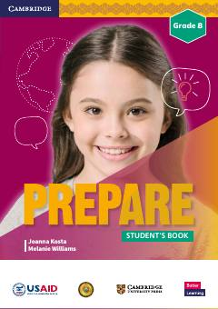

EG8-sinf o'quvchilari uchun mo'ljallangan ingliz tili darsligi.
Ushbu darslik O'zbekiston Respublikasi Xalq ta'limi vazirligi va USAID hamkorligida yaratilgan bo'lib, 8-sinf o'quvchilari uchun mo'ljallangan. Kitob ingliz tilini o'rganishda grammatika, lug'at boyligi va nutq ko'nikmalarini rivojlantirishga qaratilgan turli mavzularni qamrab oladi.